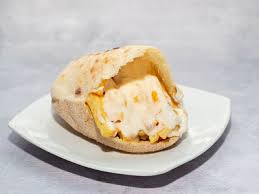

Fries Sandwich

Description
The classic Egyptian batatis (fries) mayonnaise sandwich you find at your regular falafel shop.
Ingredients
- Fries
- Shami or fino bread
- Ketchup
- Mayonnaise
- Grated carrots
- Baramili Cheese
- Pickles
Steps
- In a small bowl, mix an equal amount of ketchup and mayonnaise.
- Add to the mix the grated carrots and pickles.
- Open the bread and spread the Baramili cheese.
- Add the fries.
- Top with the ketchup and mayonnaise mix.
- Close the sandwich and enjoy!
Best enjoyed with a cola drink!